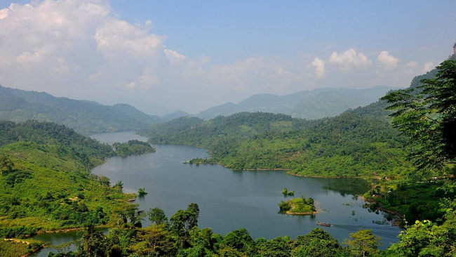
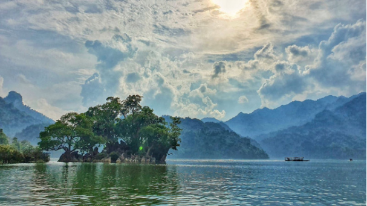
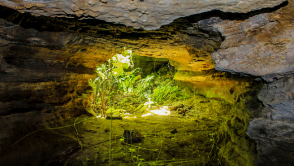

WIKI VIỆT NAM

Bắc Kạn nằm ở vùng Đông Bắc Việt Nam, phía bắc giáp tỉnh Cao Bằng, phía đông giáp tỉnh Lạng Sơn, phía nam giáp tỉnh Thái Nguyên và phía tây giáp tỉnh Tuyên Quang. Bắc Kạn cách Hà Nội 165km, là nơi giàu tiềm năng du lịch bởi sự phong phú và đa dạng về nguồn tài nguyên, khoáng sản và nền văn hoá đậm đà bản sắc dân tộc.
Bắc Kạn cũng là một trong những địa bàn trọng yếu ở phía Bắc về kinh tế- chính trị- quân sự. Chính vì vậy, trong lịch sử dựng nước và giữ nước của dân tộc, nhân dân Bắc Kạn đã luôn kề vai, sát cánh cùng nhân dân cả nước để bảo vệ chủ quyền dân tộc
Thời tiết Bắc Kạn có sự phân hóa theo mùa rõ rệt với 2 mùa mưa và mùa khô.
Mùa mưa từ tháng 5 đến tháng 10. Mùa khô từ tháng 11- 4 năm sau.
Nằm giữa 2 hệ thống núi cánh cung của Đông Bắc nên khí hậu khá lạnh về mùa đông.
Nếu bạn muốn tới Vườn quốc gia Ba Bể thì nên đi vào khoảng thời gian từ tháng 5-9. Lúc này thời tiết miền Bắc nắng nóng nhưng khu vực này lúc nào cũng mát mẻ do được bao bọc bởi các dãy núi và có hồ nước điều hòa khí hậu.
Vào khoảng tháng 1 âm thường là dịp lễ hội của các dân tộc vùng cao, bạn có thể đi du lịch Bắc Kạn thời gian này để có cơ hội tìm hiểu các nét độc đáo trong văn hóa và khám phá ẩm thực của người dân nơi đây.
Để hành trình khám phá động Bắc Kạn được thuận lợi hơn, du khách nên theo dõi dự báo thời tiết Bắc Kạn 7 ngày tới, tự động cập nhật cho du lịch để chọn những ngày nắng đẹp, thời tiết thuận lợi.
Tất nhiên rồi, hồ Ba Bể vẫn là địa điểm đẹp nhất, nổi tiếng nhất của du lịch Bắc Kạn. Được công nhận là một trong 20 hồ nước ngọt quý hiếm của thế giới cần được bảo vệ, hồ Ba Bể được bao bọc bởi một hệ thống chằng chịt núi đá vôi, hang động và suối ngầm
Hồ Ba Bể được tạo thành từ 3 hồ lớn là Pé Lầm, Pé Lù và Pé Lèng. Theo ước tính, hồ Ba Bể dài đến 8 km, một số đoạn có núi đá nổi lên tạo thành đảo giữa hồ, nổi tiếng là An Mã, hòn đảo có hình dáng chú ngựa đóng cương đang lội nước.
Dạo chơi trên hồ Ba Bể, bạn sẽ choáng ngợp trong một màu xanh mướt của núi rừng bủa vậy, của bóng nước gương soi xanh biếc. Những cô gái Tày chèo thuyền độc mộc sẽ đưa bạn vào cõi mơ trên mặt hồ phẳng lặng.
Đây là minh chứng đầu tiên cho thấy du lịch Bắc Kạn không chỉ dừng ở hồ Ba Bể. Ở ngay trong cùng khu vực này, vườn quốc gia Ba Bể là một điểm du lịch sinh thái lý tưởng với hệ động thực vật phong phú, cảnh quan thiên nhiên kỳ thú.
Được công nhận là Vườn di sản ASEAN, vườn quốc gia Ba Bể đặc biệt có nhiều loài cá và chim quý hiếm. Có 106 loài cá sống ở hồ Ba Bể, 322 loài chim trong rừng của vườn quốc gia. Bên cạnh đó còn là 533 loài côn trùng, 81 loài thú, 1.281 loài thực vật với 182 giống hoa lan… Đặc biệt, 66 loài quý hiếm đã được đưa vào Sách đỏ Thế giới.
Di tích cấp quốc gia này gắn liền với truyền thuyết 7 nàng tiên xuống hạ giới vãn cảnh, tắm suối dưới chân núi nơi đây. Do mải ngắm hoa bắt bướm mà các nàng không kịp bay về trời khi thiên đình đóng cửa nên phải vào rừng tìm nơi trú ngụ. Trời rủ lòng thương nên hóa phép tạo nên hang động cho 7 nàng tiên qua đêm. Đó là sự tích về động Nàng Tiên.
Động ăn sâu xuống lòng núi khoảng 60 m, chiều cao trong khoảng 30 – 50 m, có nhiều nhũ đá, cột đá, măng đá lóng lánh tạo nên cảnh quan rực rỡ. Động có nhiều ngách nhỏ dài hành chục mét thông ra sườn núi giúp bạn không cảm thấy ngộp thở khi tham quan.
Ở khu vực động Nàng Tiên có khá nhiều món đặc sản của địa phương như thịt lợn quay tẩm ướp những gia vị đặc biệt, miến dong Côn Minh với dong được trồng trên núi đá nơi đây…
This site was created with the Nicepage